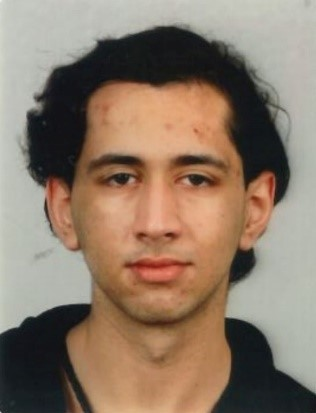
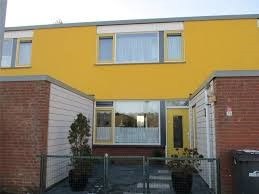

nav 1 | nav 2 | dark mode |
|---|
Steale van Walbeek
|  |
Geboren op 23-05-2006 in Ziekenhuis St Jansdal. Woont in Lelystad. Heeft een basis diploma gehaald op De Windroos en een middelbare op De SGL/Het Porteum. Is naar mediacollege Amsterdam gekomen voor zijn mbo. Gaat waarschijnlijk richting Game-Development maar is ook geïnteresseerd in Web-Development. |
|---|---|
Woonplaats |
|
|
Woont in Kempenaar-Lelystad, een kleine en gezellige buurt. Woonde in de eerste 12 jaar van zijn leven met zijn grootouders en is later verhuisd met zijn moeder en oudere broer. Zijn broer is later terug verhuisd en nu woont Steale alleen met zijn moeder. |
 |
Hobby's |
|
|
Geniet in zijn vrije tijd van lezen. Vooral fantasie boeken en CYOA (Choose Your Own Adventure) boeken. Hij gamed ook veel, een paar favorieten series zijn Monster Hunter en Fire Emblem. Hij zingt graag, of dat thuis, ter fiets of lopend is. Het is een activiteit waar hij erg van geniet. |
|
Wat kan hij? |
|
|
Is een talent in meeste lichamelijke activiteiten, maar omdat hij teveel blesures heeft opgelopen kan die zulke activiteiten niet meer doen. Kan goed dagdromen en daardoor complexe en intrinsieke werelden en systemen bouwen. |
Zijn top 10
wat heeft hem hem gemaakt
- zijn katten
- Magium (Een online CYOA-boek.)
- Stabbyness (Een twitch kanaal.)
- JelloApocalypse (Een youtube kanaal.)
- LHBTQI+ community
- Zijn familie
- Zijn docent op de middelbare
- zijn kleine broertje
- Zijn baan als vakkenvuller
- Zijn klasgenoten